CODING AGENTS AS PIXEL WORLD MODELS
traex/DeepSeek-V4.1-Flash · 0157
点击播放 · 原生 RGB 像素
逐轮保存的候选
回放视频、检查图与代码变化。
每份候选均可单独播放。实际图片检查记录在下方工具轨迹中。
候选 01播放与检查图
点击播放 · 原生 RGB 像素

展开代码变化
--- 上一保存版本
+++ 本次保存版本
@@ -0,0 +1,216 @@
+from pathlib import Path
+
+import cv2
+import numpy as np
+from PIL import Image
+
+import artifact_io
+
+
+W, H = 256, 144
+N_FRAMES = 20
+SCALE = 4
+
+
+def smoothstep(value):
+ value = np.clip(value, 0.0, 1.0)
+ return value * value * (3.0 - 2.0 * value)
+
+
+def cloth_geometry(x, y, t):
+ """Return the antialiased cloth mask, hem height, and cloth parameters."""
+ p = float(np.clip((t - 0.01) / 0.80, 0.0, 1.0))
+ descent = smoothstep(p)
+ center_x = 166.5 + 1.4 * np.sin(2.0 * np.pi * (0.31 * t + 0.08))
+
+ base_hem = -2.0 + 107.0 * descent
+ hem_wave = (
+ (1.15 + 0.25 * (1.0 - descent))
+ * np.sin(2.0 * np.pi * ((x - center_x) / 25.0 + 0.18 * t))
+ + 0.60
+ * np.sin(2.0 * np.pi * ((x - center_x) / 11.5 - 0.42 * t))
+ )
+ floor_curve = 104.0 + 0.9 * np.sin(
+ 2.0 * np.pi * ((x - center_x) / 39.0 - 0.10)
+ )
+ hem = np.minimum(base_hem + hem_wave, floor_curve)
+
+ half_width = (41.0 + 29.5 * descent) * (
+ 0.955 + 0.055 * np.clip(y / max(base_hem, 1.0), 0.0, 1.0)
+ )
+ left_wave = (
+ 1.8 * np.sin(2.0 * np.pi * (y / 53.0 + 0.24 * t))
+ + 0.65 * np.sin(2.0 * np.pi * (y / 18.0 - 0.50 * t))
+ )
+ right_wave = (
+ 1.5 * np.sin(2.0 * np.pi * (y / 47.0 - 0.20 * t + 0.34))
+ + 0.55 * np.sin(2.0 * np.pi * (y / 16.0 + 0.43 * t))
+ )
+ left = center_x - half_width + left_wave
+ right = center_x + half_width + right_wave
+
+ top_soft = 1.0 / (1.0 + np.exp(np.clip(-(y + 20.0) / 0.45, -50.0, 50.0)))
+ left_soft = 1.0 / (1.0 + np.exp(np.clip(-(x - left) / 0.38, -50.0, 50.0)))
+ right_soft = 1.0 / (1.0 + np.exp(np.clip(-(right - x) / 0.38, -50.0, 50.0)))
+ hem_soft = 1.0 / (1.0 + np.exp(np.clip(-(hem - y) / 0.38, -50.0, 50.0)))
+ mask = top_soft * left_soft * right_soft * hem_soft
+ return mask.astype(np.float32), hem, center_x, half_width, descent
+
+
+def make_texture_noise():
+ rng = np.random.default_rng(157)
+ coarse = rng.random((15, 27), dtype=np.float32)
+ coarse = cv2.GaussianBlur(coarse, (0, 0), 0.65)
+ coarse = cv2.resize(coarse, (W * SCALE, H * SCALE), interpolation=cv2.INTER_CUBIC)
+ fine = rng.normal(0.0, 1.0, (H * SCALE, W * SCALE)).astype(np.float32)
+ fine = cv2.GaussianBlur(fine, (0, 0), 0.65)
+ return coarse, fine
+
+
+TEXTURE_COARSE, TEXTURE_FINE = make_texture_noise()
+
+
+def render_cloth(frame_index):
+ t = frame_index / (N_FRAMES - 1)
+ yy, xx = np.mgrid[0 : H * SCALE, 0 : W * SCALE].astype(np.float32)
+ x = (xx + 0.5) / SCALE - 0.5
+ y = (yy + 0.5) / SCALE - 0.5
+
+ mask, hem, center_x, half_width, descent = cloth_geometry(x, y, t)
+ if float(mask.max()) < 0.002:
+ return None, None
+
+ dx = x - center_x
+ dy = y - 66.0
+ radius = np.sqrt((dx / 34.0) ** 2 + (dy / 38.0) ** 2 + 1.0e-5)
+ angle = np.arctan2(dy / 38.0, dx / 34.0)
+ drape = smoothstep(descent) ** 2
+
+ # A moving set of broad folds, plus folds that form around the covered pot.
+ fold_phase = 2.0 * np.pi * t
+ h = (
+ 0.82 * np.sin(2.0 * np.pi * dx / 19.0 + 0.75 * np.sin(2.0 * np.pi * t + 0.4))
+ + 0.34 * np.sin(2.0 * np.pi * dx / 8.5 - (y - hem) / 31.0 + 1.1 * t)
+ + 0.47 * np.sin(2.0 * np.pi * ((y - hem) / 44.0 + 0.10 * np.sin(dx / 17.0)))
+ + 0.20 * np.sin(0.45 * fold_phase + 2.6 * radius)
+ )
+ h += (
+ drape
+ * 0.62
+ * np.exp(-((radius - 0.48) / 0.36) ** 2)
+ * np.sin(5.0 * angle + 1.7 * radius + 0.35 * t)
+ )
+ dome = np.exp(-((dx / 32.0) ** 2 + ((y - 68.0) / 37.0) ** 2))
+ handle_hint = np.exp(-(((x - 121.5) / 11.0) ** 2 + ((y - 67.0) / 18.0) ** 2))
+ spout_hint = np.exp(-(((x - 211.0) / 12.0) ** 2 + ((y - 67.0) / 18.0) ** 2))
+ h += drape * (5.8 * dome + 0.9 * handle_hint + 0.9 * spout_hint)
+
+ h = cv2.GaussianBlur(h, (0, 0), 0.55 * SCALE)
+ grad_y, grad_x = np.gradient(h)
+ nx = -0.56 * grad_x
+ ny = -0.56 * grad_y
+ nz = np.ones_like(nx)
+ inv_norm = 1.0 / np.sqrt(nx * nx + ny * ny + nz * nz)
+ nx *= inv_norm
+ ny *= inv_norm
+ nz *= inv_norm
+
+ light = np.array([-0.48, -0.62, 0.62], dtype=np.float32)
+ light /= np.linalg.norm(light)
+ half_vector = light + np.array([0.0, 0.0, 1.0], dtype=np.float32)
+ half_vector /= np.linalg.norm(half_vector)
+ diffuse = np.clip(nx * light[0] + ny * light[1] + nz * light[2], 0.0, 1.0)
+ specular = np.clip(
+ nx * half_vector[0] + ny * half_vector[1] + nz * half_vector[2], 0.0, 1.0
+ )
+ specular = specular**22
+
+ # Fine fabric grain and a subtle warp/weft sheen travel with the cloth.
+ thread = (
+ 0.012 * np.sin(2.0 * np.pi * (x / 2.6 + y / 9.5))
+ + 0.008 * np.sin(2.0 * np.pi * (x / 7.0 - y / 2.8))
+ )
+ texture = 0.032 * (TEXTURE_COARSE - 0.5) + 0.008 * TEXTURE_FINE
+ edge_falloff = np.clip((half_width - np.abs(dx)) / 17.0, 0.0, 1.0)
+ side_ao = 1.0 - 0.18 * (1.0 - edge_falloff)
+ hem_ao = 1.0 - 0.10 * np.clip((8.0 - (hem - y)) / 8.0, 0.0, 1.0)
+ fold_lum = (0.58 + 0.38 * diffuse + 0.32 * specular) * side_ao * hem_ao
+ fold_lum += thread + texture
+
+ base = np.array([224.0, 213.0, 201.0], dtype=np.float32)
+ cool = np.array([0.985, 1.0, 1.018], dtype=np.float32)
+ color = base[None, None, :] * fold_lum[:, :, None] * cool[None, None, :]
+ color += 20.0 * (specular**1.6)[:, :, None]
+
+ # A warm reflected glow from the table occupies the lowest part of the silk.
+ table_glow = np.clip((y - 84.0) / 22.0, 0.0, 1.0) * descent
+ color[:, :, 0] += 5.0 * table_glow
+ color[:, :, 1] += 2.0 * table_glow
+
+ gx = cv2.Sobel(mask, cv2.CV_32F, 1, 0, ksize=3)
+ gy = cv2.Sobel(mask, cv2.CV_32F, 0, 1, ksize=3)
+ left_rim = np.clip(gx / 3.0, 0.0, 1.0)
+ right_rim = np.clip(-gx / 3.0, 0.0, 1.0)
+ lower_rim = np.clip(-gy / 3.0, 0.0, 1.0)
+ color += 13.0 * left_rim[:, :, None]
+ color -= 20.0 * right_rim[:, :, None]
+ color -= 12.0 * lower_rim[:, :, None]
+
+ return np.clip(color, 0.0, 255.0), mask
+
+
+def shifted_blur(mask, shift_x, shift_y, sigma):
+ transform = np.float32([[1.0, 0.0, shift_x * SCALE], [0.0, 1.0, shift_y * SCALE]])
+ shifted = cv2.warpAffine(
+ mask,
+ transform,
+ (W * SCALE, H * SCALE),
+ flags=cv2.INTER_LINEAR,
+ borderMode=cv2.BORDER_CONSTANT,
+ borderValue=0.0,
+ )
+ return cv2.GaussianBlur(shifted, (0, 0), sigma * SCALE)
+
+
+def compose_frame(first_frame, frame_index):
+ if frame_index == 0:
+ return first_frame.copy()
+
+ color, mask = render_cloth(frame_index)
+ if color is None:
+ return first_frame.copy()
+
+ base = cv2.resize(
+ first_frame, (W * SCALE, H * SCALE), interpolation=cv2.INTER_CUBIC
+ ).astype(np.float32)
+ t = frame_index / (N_FRAMES - 1)
+ descent = smoothstep(float(np.clip((t - 0.01) / 0.80, 0.0, 1.0)))
+
+ # Cast shadow onto the backdrop and table, strongest as the fabric settles.
+ cast = shifted_blur(mask, 3.8, 3.3, 4.3)
+ ambient = cv2.GaussianBlur(mask, (0, 0), 2.4 * SCALE)
+ shadow = np.clip(0.40 * cast + 0.16 * ambient, 0.0, 0.50)
+ shadow *= (1.0 - mask)
+ shadow_strength = (0.38 + 0.32 * descent)[..., None]
+ base *= 1.0 - shadow[..., None] * shadow_strength
+
+ alpha = mask[..., None]
+ output = base * (1.0 - alpha) + color * alpha
+ output = cv2.resize(output, (W, H), interpolation=cv2.INTER_AREA)
+ return np.clip(output + 0.5, 0.0, 255.0).astype(np.uint8)
+
+
+def main():
+ case_dir = Path(__file__).resolve().parent
+ first = np.asarray(Image.open(case_dir / "first_frame.png").convert("RGB"))
+ frames = np.stack(
+ [compose_frame(first, index) for index in range(N_FRAMES)], axis=0
+ )
+ assert frames.shape == (N_FRAMES, H, W, 3)
+ assert frames.dtype == np.uint8
+ assert np.array_equal(frames[0], first)
+ artifact_io.save(frames, case_dir)
+
+
+if __name__ == "__main__":
+ main()

候选 03播放与检查图
点击播放 · 原生 RGB 像素
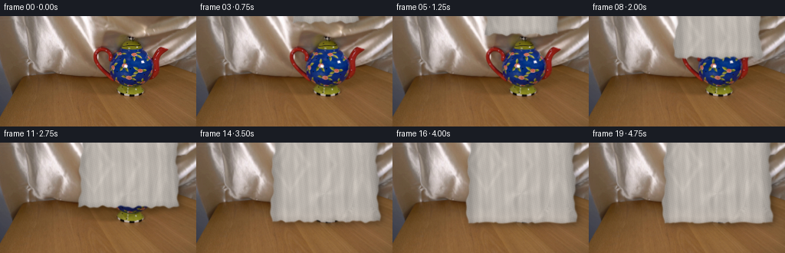
展开代码变化
--- 上一保存版本
+++ 本次保存版本
@@ -9,7 +9,7 @@
W, H = 256, 144
N_FRAMES = 20
-SCALE = 4
+SCALE = 3
def smoothstep(value):
@@ -57,20 +57,28 @@
return mask.astype(np.float32), hem, center_x, half_width, descent
-def make_texture_noise():
+def make_texture_noise(first_frame):
rng = np.random.default_rng(157)
coarse = rng.random((15, 27), dtype=np.float32)
coarse = cv2.GaussianBlur(coarse, (0, 0), 0.65)
coarse = cv2.resize(coarse, (W * SCALE, H * SCALE), interpolation=cv2.INTER_CUBIC)
fine = rng.normal(0.0, 1.0, (H * SCALE, W * SCALE)).astype(np.float32)
fine = cv2.GaussianBlur(fine, (0, 0), 0.65)
- return coarse, fine
-
-
-TEXTURE_COARSE, TEXTURE_FINE = make_texture_noise()
-
-
-def render_cloth(frame_index):
+ # The backdrop is already a real silk specimen. Its high-frequency detail
+ # gives the falling piece a more photographic surface than noise alone.
+ source = first_frame[0:87, 23:118].astype(np.float32)
+ broad = cv2.GaussianBlur(source, (0, 0), 7.0)
+ detail = (source + 8.0) / (broad + 8.0)
+ detail = np.clip(detail, 0.72, 1.30).mean(axis=2)
+ detail = cv2.copyMakeBorder(detail, 140, 140, 170, 170, cv2.BORDER_REFLECT_101)
+ detail = detail[112:256, 142:398]
+ detail = cv2.resize(
+ detail, (W * SCALE, H * SCALE), interpolation=cv2.INTER_LINEAR
+ )
+ return coarse, fine, detail.astype(np.float32)
+
+
+def render_cloth(frame_index, textures):
t = frame_index / (N_FRAMES - 1)
yy, xx = np.mgrid[0 : H * SCALE, 0 : W * SCALE].astype(np.float32)
x = (xx + 0.5) / SCALE - 0.5
@@ -130,11 +138,13 @@
0.012 * np.sin(2.0 * np.pi * (x / 2.6 + y / 9.5))
+ 0.008 * np.sin(2.0 * np.pi * (x / 7.0 - y / 2.8))
)
- texture = 0.032 * (TEXTURE_COARSE - 0.5) + 0.008 * TEXTURE_FINE
+ texture_coarse, texture_fine, silk_detail = textures
+ texture = 0.025 * (texture_coarse - 0.5) + 0.006 * texture_fine
edge_falloff = np.clip((half_width - np.abs(dx)) / 17.0, 0.0, 1.0)
side_ao = 1.0 - 0.18 * (1.0 - edge_falloff)
hem_ao = 1.0 - 0.10 * np.clip((8.0 - (hem - y)) / 8.0, 0.0, 1.0)
fold_lum = (0.58 + 0.38 * diffuse + 0.32 * specular) * side_ao * hem_ao
+ fold_lum *= 0.86 + 0.14 * silk_detail
fold_lum += thread + texture
base = np.array([224.0, 213.0, 201.0], dtype=np.float32)
@@ -172,11 +182,11 @@
return cv2.GaussianBlur(shifted, (0, 0), sigma * SCALE)
-def compose_frame(first_frame, frame_index):
+def compose_frame(first_frame, frame_index, textures):
if frame_index == 0:
return first_frame.copy()
- color, mask = render_cloth(frame_index)
+ color, mask = render_cloth(frame_index, textures)
if color is None:
return first_frame.copy()
@@ -203,8 +213,9 @@
def main():
case_dir = Path(__file__).resolve().parent
first = np.asarray(Image.open(case_dir / "first_frame.png").convert("RGB"))
+ textures = make_texture_noise(first)
frames = np.stack(
- [compose_frame(first, index) for index in range(N_FRAMES)], axis=0
+ [compose_frame(first, index, textures) for index in range(N_FRAMES)], axis=0
)
assert frames.shape == (N_FRAMES, H, W, 3)
assert frames.dtype == np.uint8
候选 04播放与检查图
点击播放 · 原生 RGB 像素
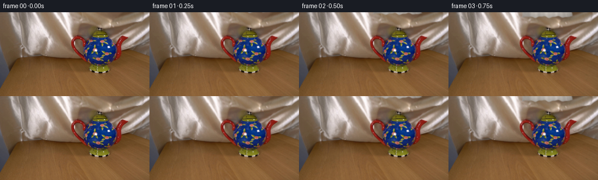
展开代码变化
--- 上一保存版本
+++ 本次保存版本
@@ -30,10 +30,11 @@
+ 0.60
* np.sin(2.0 * np.pi * ((x - center_x) / 11.5 - 0.42 * t))
)
- floor_curve = 104.0 + 0.9 * np.sin(
+ floor_curve = 103.5 + 0.8 * np.sin(
2.0 * np.pi * ((x - center_x) / 39.0 - 0.10)
)
- hem = np.minimum(base_hem + hem_wave, floor_curve)
+ edge_touch = 0.45 + 0.55 * np.exp(-((x - center_x) / 34.0) ** 2)
+ hem = np.minimum(base_hem + hem_wave * edge_touch, floor_curve)
half_width = (41.0 + 29.5 * descent) * (
0.955 + 0.055 * np.clip(y / max(base_hem, 1.0), 0.0, 1.0)
可观测工具轨迹
实际执行的命令与返回图片。
命令 1exit 0
/bin/bash -c "pwd && rg --files -g '"'!*.pyc'"' -g '"'!__pycache__'"' | sed -n '1,200p'"
命令 2exit 0
/bin/bash -c "sed -n '1,240p' prompt.txt"
命令 3exit 0
/bin/bash -c "sed -n '1,280p' GENERATION_RULES.md"
命令 4exit 0
/bin/bash -c "find . -maxdepth 3 -type f -printf '%p\\n' | sort | sed -n '1,240p'"
命令 5exit 127
/bin/bash -c "file first_frame.png && identify -verbose first_frame.png | sed -n '1,80p'"
命令 6exit 0
/bin/bash -c "sed -n '1,260p' artifact_io.py"
命令 7exit 0
/bin/bash -c "python - <<'PY'
from PIL import Image
im=Image.open('first_frame.png')
print(im.mode, im.size)
PY"命令 8exit 0
/bin/bash -c "python - <<'PY'
mods=['numpy','PIL','cv2','scipy','skimage']
for m in mods:
try:
x=__import__(m); print(m, getattr(x,'__version__','ok'))
except Exception as e: print(m,'MISSING',e)
PY"命令 9exit 0
/bin/bash -c "python - <<'PY'
from PIL import Image
import numpy as np
im=np.array(Image.open('first_frame.png'))
# print selected coords RGB
for y in [10,25,40,55,70,85,95,105,120,135]:
print('y',y,[(x,tuple(im[y,x])) for x in [5,40,80,110,130,150,170,190,210,230,250]])
# kmeans colors
import cv2
z=im.reshape(-1,3).astype(np.float32)
crit=(cv2.TERM_CRITERIA_EPS+cv2.TERM_CRITERIA_MAX_ITER,30,0.5)
_,lab,cent=cv2.kmeans(z,10,None,crit,4,cv2.KMEANS_PP_CENTERS)
counts=np.bincount(lab.ravel())
for i in np.argsort(counts)[::-1]: print(counts[i],cent[i].round().astype(int))
PY"命令 10exit 0
/bin/bash -c "python - <<'PY'
from PIL import Image
im=Image.open('first_frame.png')
im.resize((1024,576),Image.Resampling.NEAREST).save('.tmp/first_x4.png')
PY"命令 11exit 0
/bin/bash -c 'python generate.py'
命令 12exit 0
/bin/bash -c "python - <<'PY'
from PIL import Image
for i in [2,5,8,11,14,19]:
im=Image.open(f'frames/{i:02d}.png')
im.resize((1024,576),Image.Resampling.NEAREST).save(f'.tmp/f{i:02d}_x4.png')
PY"命令 13exit 0
/bin/bash -c "python - <<'PY'
from PIL import Image
import numpy as np
for i in [2,5,8,11,14,19]:
a=np.array(Image.open(f'frames/{i:02d}.png')).astype(int)
# compare to first, threshold diff > 15
b=np.array(Image.open('first_frame.png')).astype(int)
d=np.max(np.abs(a-b),axis=2)
ys,xs=np.where(d>12)
print(i, (xs.min(),xs.max(),ys.min(),ys.max()), 'count',len(xs))
PY"命令 14exit 0
/bin/bash -c "sed -n '1,240p' player_template.html"
命令 15exit 127
/bin/bash -c "/usr/bin/time -f 'elapsed=%E' python generate.py"
命令 16exit 0
/bin/bash -c 'time python generate.py'
命令 17exit 0
/bin/bash -c "python - <<'PY'
from PIL import Image
import numpy as np
im=np.array(Image.open('frames/19.png'))
# crop pot/cloth to enlarged
Image.fromarray(im[25:110,85:245]).resize((960,510),Image.Resampling.NEAREST).save('.tmp/final_crop.png')
PY"命令 18exit 0
/bin/bash -c "python - <<'PY'
from PIL import Image
import numpy as np, hashlib, json, os
from pathlib import Path
p=Path('.')
frames=sorted((p/'frames').glob('*.png'))
a=np.stack([np.array(Image.open(f).convert('RGB')) for f in frames])
first=np.array(Image.open('first_frame.png').convert('RGB'))
print('frames',len(frames),'shape',a.shape,'dtype',a.dtype)
print('frame0 identical',np.array_equal(a[0],first), 'hash',hashlib.sha256(a[0].tobytes()).hexdigest()[:16])
print('unique frame0',len(np.unique(a[0].reshape(-1,3),axis=0)))
print('pixel file',os.path.getsize('pixels.npz'),'html',os.path.getsize('index.html'))
print('all finite',np.isfinite(a).all())
PY"命令 19exit 0
/bin/bash -c 'node --version || true'
命令 20exit 0
/bin/bash -c "python - <<'PY'
import numpy as np
z=np.load('pixels.npz')['pixels']
print(z.shape,z.dtype)
# unpack check
v=z[0]
print(int(v[0,0]), int(v[-1,-1]))
PY"命令 21exit 0
/bin/bash -c 'git status --short 2>/dev/null || true'
命令 22exit 0
/bin/bash -c "node - <<'JS'
const fs=require('fs');
const html=fs.readFileSync('index.html','utf8');
const data=JSON.parse(html.match(/const DATA=(\\{.*?\\}),W=/s)[1]);
function unpack(s){const b=Buffer.from(s,'base64');return new Uint32Array(b.buffer,b.byteOffset,b.length/4)}
const frames=[unpack(data.first)];
for(const encoded of data.deltas){const f=new Uint32Array(frames.at(-1));const p=unpack(encoded);for(let i=0;i<p.length;){const start=p[i++],count=p[i++];f.set(p.subarray(i,i+count),start);i+=count}frames.push(f)}
console.log({width:data.width,height:data.height,frames:data.frames,fps:data.fps,reconstructed:frames.length,firstPixels:frames[0].length,lastPixel:frames.at(-1).at(-1)});
if(frames.length"'!==20||frames[0].length!==256*144)process.exit(1);
JS'命令 23exit 0
/bin/bash -c "python - <<'PY'
from pathlib import Path
import hashlib, json, subprocess
paths=[Path('pixels.npz'),Path('index.html'),Path('inspection.png'),Path('transition_check.png')]
before={str(p):hashlib.sha256(p.read_bytes()).hexdigest() for p in paths}
subprocess.run(['python','generate.py'],check=True)
after={str(p):hashlib.sha256(p.read_bytes()).hexdigest() for p in paths}
print('deterministic',before==after)
for p in paths: print(p, before[str(p)][:16], after[str(p)][:16])
PY"命令 24exit 0
/bin/bash -c "python - <<'PY'
import cv2, numpy as np
from PIL import Image
A=np.stack([np.array(Image.open(f'frames/{i:02d}.png')) for i in range(20)]).astype(np.float32)
# motion and clipping checks
mad=np.abs(np.diff(A,axis=0)).mean(axis=(1,2,3))
print('interframe mean abs diff',np.round(mad,2).tolist())
print('frame luminance',np.round(A.mean(axis=(1,2,3)),2).tolist())
print('range',A.min(),A.max())
# final coverage of pot area proxy: changed pixels in bounding region vs frame0
base=A[0]
d=np.max(np.abs(A[-1]-base),axis=2)
print('final changed >10',int((d>10).sum()),'bbox',cv2.boundingRect((d>10).astype(np.uint8)))
PY"命令 25exit 0
/bin/bash -c 'python generate.py'
命令 26exit 0
/bin/bash -c "python - <<'PY'
from PIL import Image
import numpy as np, hashlib
frames=np.stack([np.array(Image.open(f'frames/{i:02d}.png')) for i in range(20)])
first=np.array(Image.open('first_frame.png'))
assert frames.shape==(20,144,256,3) and frames.dtype==np.uint8
assert np.array_equal(frames[0],first)
assert np.isfinite(frames).all()
# Check no accidental alpha/empty frames and plausible cloth progression.
changed=[int((np.max(np.abs(frames[i]-frames[0]),axis=2)>10).sum()) for i in range(20)]
assert changed[0]==0 and changed[-1]>10000
print('PASS', frames.shape, 'changed pixels:', changed)
PY"视觉工具实际返回图片 1
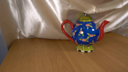
视觉工具实际返回图片 2
视觉工具实际返回图片 3
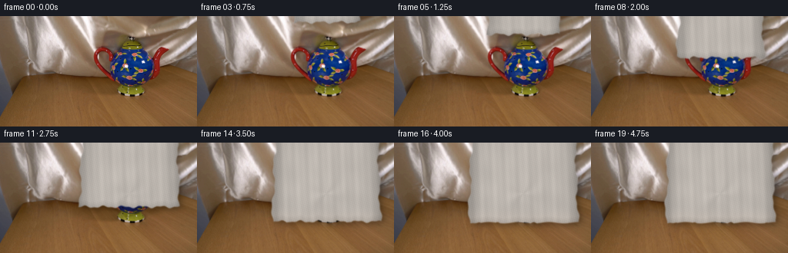
视觉工具实际返回图片 4
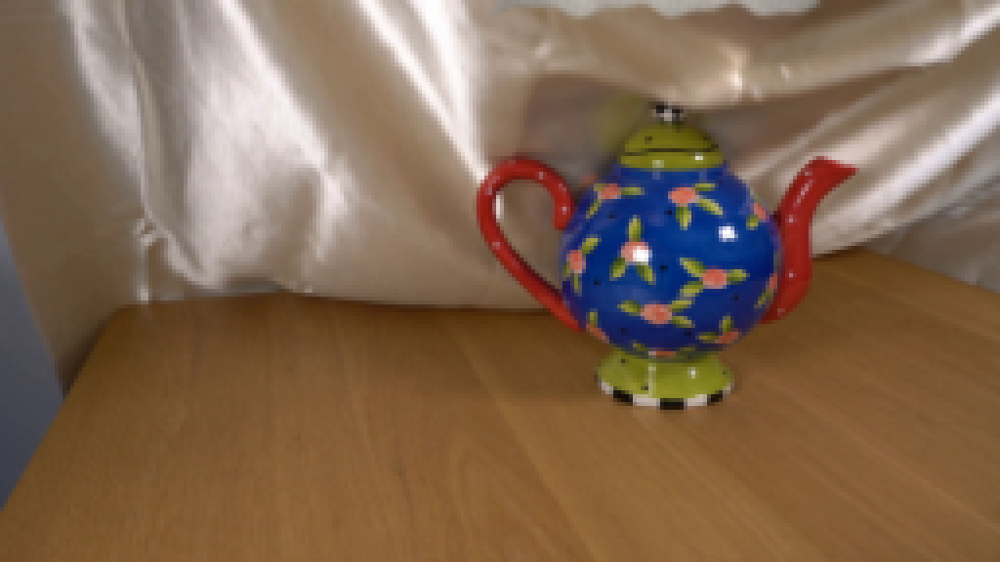
视觉工具实际返回图片 5
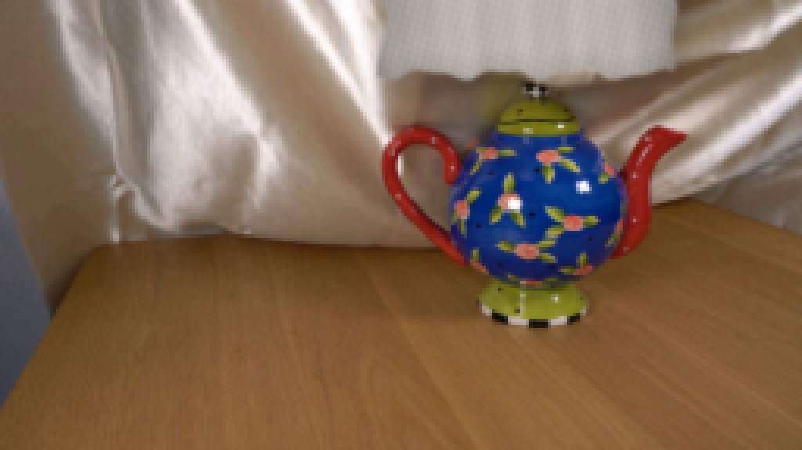
视觉工具实际返回图片 6
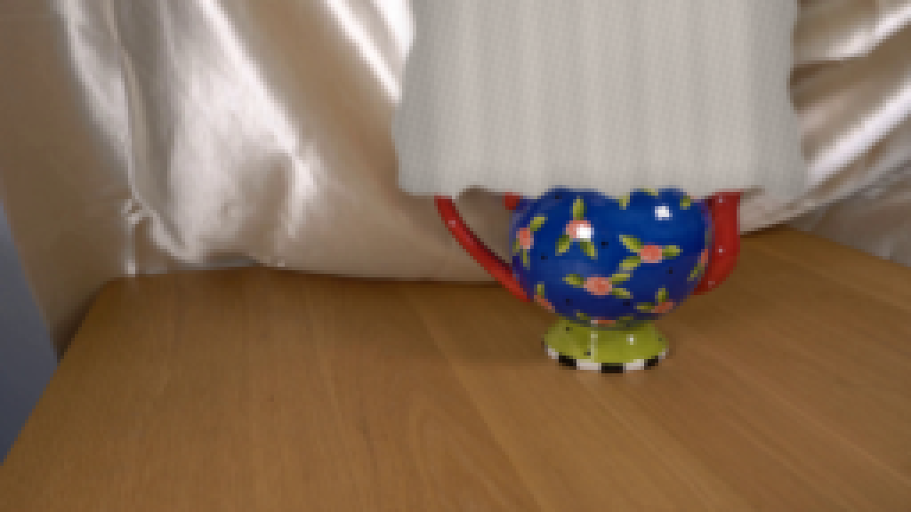
视觉工具实际返回图片 7
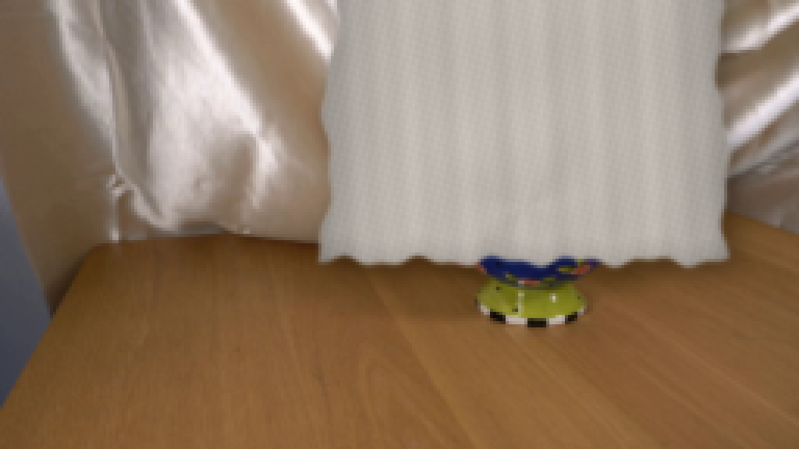
视觉工具实际返回图片 8
视觉工具实际返回图片 9
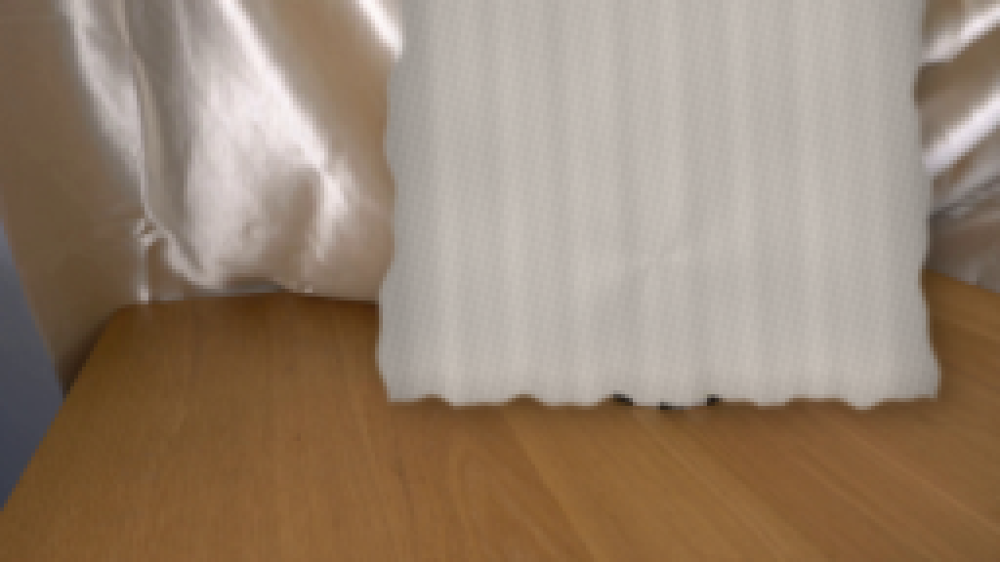
视觉工具实际返回图片 10

视觉工具实际返回图片 11

视觉工具实际返回图片 12
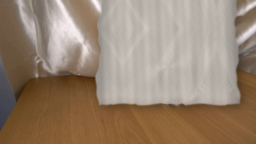
视觉工具实际返回图片 13
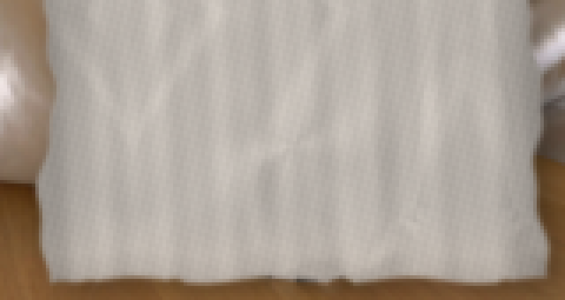
视觉工具实际返回图片 14

视觉工具实际返回图片 15
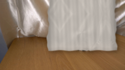
保存候选 4 份；完成命令 26 次；可验证图片返回 15 张。原始 API 响应与完整日志保留在本地。